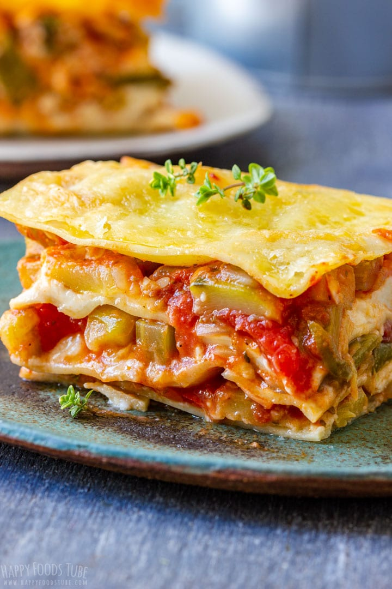

Hearty Vegetable Lasagna

Ingredients
- 0 lasagna noodles
- 4 cups cauliflower Alfredo sauce
- 5 cups veggies (I used chopped fresh greens, grated carrots, fresh and canned tomatoes)
- 3 cups mixed shredded cheese like Mozzarella, Provolone, Parmesan, etc.
- salt and pepper to taste
Steps
- For the cauliflower sauce: Saute the garlic with the butter in a large nonstick skillet
over low heat until the garlic is soft and fragrant. Bring the cauliflower in the water
or broth for 7-10 minutes or until cauliflower is fork tender. Do not drain. Use a slotted
spoon to transfer the cauliflower pieces to a blender or food processor. Add 1 cup vegetable
broth or cooking liquid, sauteed garlic/butter, salt, pepper, and milk. Blend or puree for
several minutes or until very smooth.
- Preheat oven to 375 degrees. Boil the lasagna noodles for a few minutes until they are just
starting to soften but still stiff and cool enough to handle.
- Spread a spoonful of cauliflower sauce on the bottom of a 9 inch square glass baking dish
with a drizzle of olive oil to prevent sticking. Layer lasagna noodles, 1/2 cup sauce, one
fourth of the veggies, a good sprinkle of salt, 1/2 cup cheese, and 1/4 cup sauce (I put
sauce in each layer twice, once under the veggies and once on top). Repeat layers 4 times,
ending with noodles. Cover the top noodle layer with 1/2 cup sauce and the remaining 1 cup
of cheese.
- Cover with greased foil and bake for 25 minutes. The liquid should be bubbling along the sides
of the dish. Remove the foil and bake uncovered for another 10-20 minutes or until the cheese
is golden brown to your liking. Cool for a few minutes before cutting and serving.